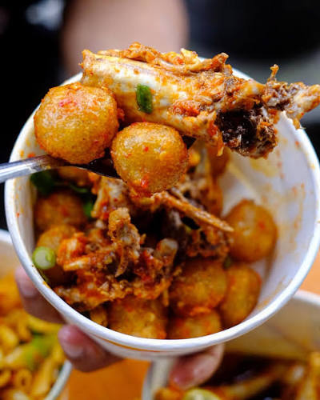

';">Cilok Goang merupakan salah satu jajanan tradisional yang berkembang di wilayah Tasikmalaya, Jawa Barat. Makanan ini merupakan pengembangan dari cilok, yaitu makanan berbahan dasar aci atau tepung tapioka yang dibentuk bulat dan dimasak dengan cara direbus.
Nama cilok berasal dari singkatan bahasa Sunda, yaitu aci dicolok, yang menggambarkan cara memakan cilok menggunakan tusuk. Sementara itu, istilah goang merujuk pada sambal khas Sunda yang dibuat dari cabai rawit yang diulek bersama garam dan bumbu lainnya.
Salah satu usaha kuliner yang mengembangkan hidangan ini adalah Cilok Goang Ona, yang berlokasi di kawasan Cikalang, Kecamatan Tawang, Kota Tasikmalaya. Berdasarkan dokumen identifikasi UMKM, usaha ini dirintis pada tahun 2014 oleh Ibu Herni Herniati.
Ciri khas Cilok Goang Ona terletak pada perpaduan cilok kenyal dengan kuah bercita rasa pedas dan gurih. Penyajiannya dilengkapi dengan tahu, tulang ayam, serta pilihan tambahan seperti ceker dan sayap ayam. Tingkat kepedasannya juga dapat disesuaikan dengan selera konsumen.
Bahan baku endogen merupakan bahan pangan yang berasal dari potensi sumber daya alam, pertanian, peternakan, dan hasil pengolahan pangan lokal yang dapat dimanfaatkan untuk menghasilkan produk kuliner daerah.
Pada Cilok Goang Ona, bahan baku utamanya berkaitan dengan pemanfaatan singkong sebagai sumber tepung tapioka, hasil peternakan ayam, serta rempah-rempah yang banyak digunakan dalam tradisi kuliner masyarakat Sunda.
Tepung tapioka merupakan hasil pengolahan pati singkong. Dalam tradisi kuliner masyarakat Sunda, aci telah banyak dimanfaatkan untuk membuat berbagai makanan seperti cilok, cireng, cimol, dan aci goreng. Tepung ini menghasilkan tekstur kenyal yang menjadi karakteristik utama cilok.
Cilok Goang Ona merupakan salah satu usaha mikro, kecil, dan menengah (UMKM) di bidang makanan ringan yang berlokasi di kawasan Cikalang, Kecamatan Tawang, Kota Tasikmalaya. Usaha ini dirintis pada tahun 2014 oleh Ibu Herni Herniati.
Keberadaan Cilok Goang Ona menjadi salah satu bentuk pengembangan jajanan berbahan dasar aci yang memiliki karakteristik cita rasa khas Sunda. Usaha ini melayani konsumen secara langsung maupun melalui pemesanan daring.
Menu utama yang ditawarkan adalah cilok goang dengan perpaduan cilok kenyal, tahu, tulang ayam, serta kuah berbumbu dengan cita rasa pedas dan gurih.
Beberapa pilihan menu yang tersedia antara lain:
Pengunjung juga dapat memilih tingkat kepedasan, mulai dari tanpa sambal hingga beberapa level pedas. Selain menu utama, tersedia kerupuk mi, nasi putih, serta minuman seperti es teh, Pop Ice, dan Nutrisari.